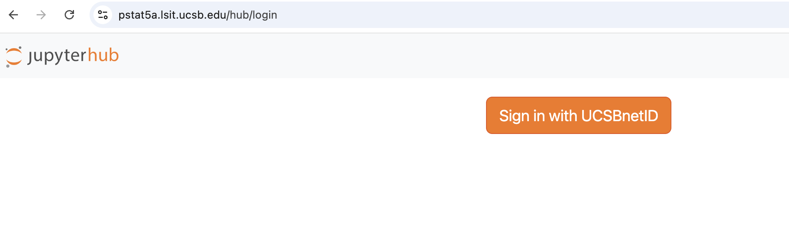
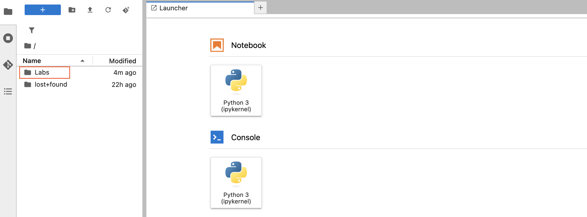
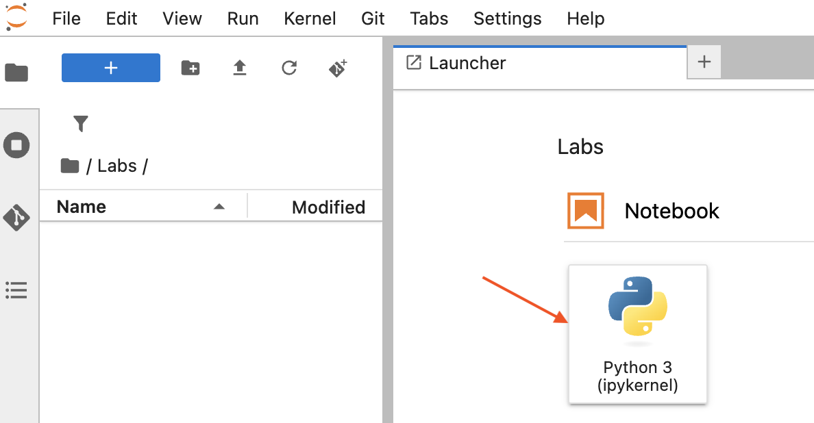
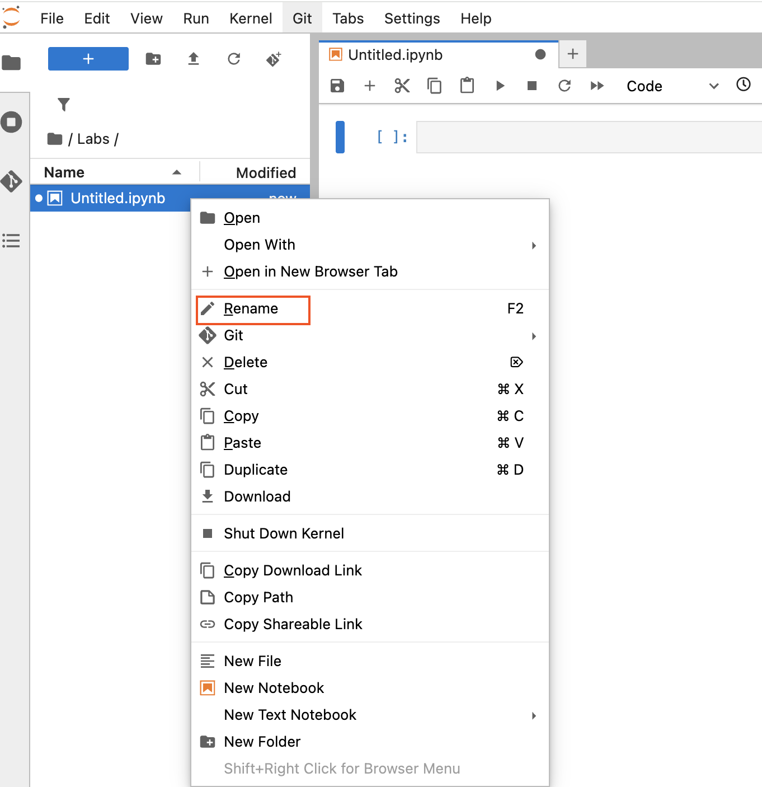
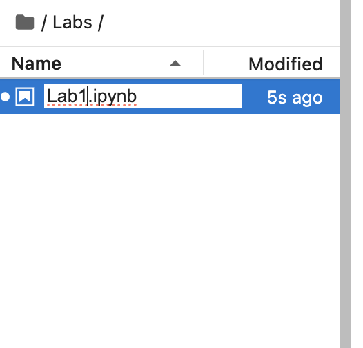
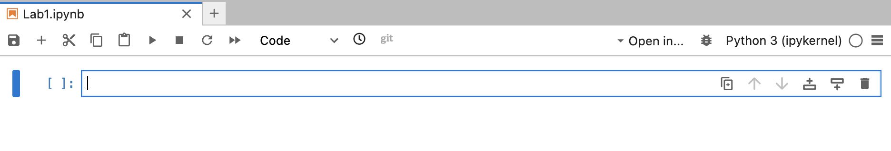
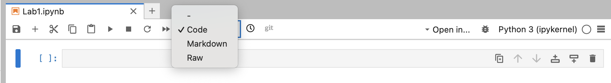
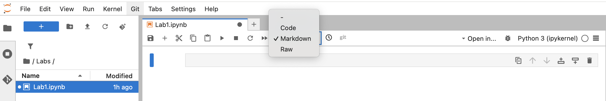
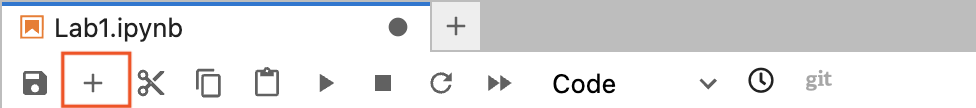

PSTAT 5A Lab 1
Welcome to the first PSTAT 5A Lab! As we will soon learn, computers play an integral part in effectively and efficiently performing statistical analyses. The primary goal of these Labs is to develop the skills to communicate with computers and learn the basic principles and language of programming.
This first lab will introduce you to the JupyterHub environment, Python as a programming language, and some basic concepts of programming. You will also complete a series of tasks to familiarize yourself with the tools and concepts we will use throughout the course.
This lab is designed to be completed during your first lab section of the week, and it will set the foundation for the rest of the course. Make sure to read through all the material carefully, as it will be essential for your success in PSTAT 5A.
Structure of Labs
Every week we (the course staff) will publish a lab document, which is intended to be completed during your Lab Section (i.e., your first Section) of the week. Each lab document will consist of a combination of text, tips, and the occasional task for you to complete based on the text provided. Your TA will cover exactly what you need to turn in at the end of each lab in order to receive credit, but you should read all lab material carefully and thoroughly as content from labs will appear on quizzes and exams.
What Is Programming?
Computers, though incredibly useful, are fairly complex machines. To communicate with them, we need to use a specific language, known as a programming language. There are a number of programming languages currently in use—R, Julia, MatLab, and the language we will use for this course, Python.
Python programs can be written in many environments (e.g., text editors like VS Code or in a Terminal window). For this class we will use Jupyter Notebook (pronounced “Jew-pi-ter”), an interactive environment that’s hosted online so you don’t have to install anything to run Python code!
Getting Started
- Navigate to (https://pstat5a.lsit.ucsb.edu)
- If you are using a personal computer, you may want to bookmark this page for easy access later.
- Click Sign in with your UCSB NetID, and sign in.
 - Navigate to the Labs folder on the left-hand side of the JupyterHub interface. 
- Under Notebook, click Python 3 (ipykernel).

Congratulations, you have just made your first Jupyter notebook! Now, it’s time for our first task:
Task 1
- Find your new notebook in the left-hand file browser (it will be named
UntitledorUntitled1by default).
- Right-click the notebook and select → Rename.
 - Rename it to
Lab1and hit Enter.
 - Watch the title bar update to
Lab1.ipynb.
The JupyterHub Environment
Jupyter notebooks are built from cells—the shaded boxes you see on screen. Here’s how to work with them:
1. Cell Activation
- Inactive cell
- Appearance: light grey background
- Action: click anywhere inside the cell to activate

- Appearance: light grey background
- Active cell
- Appearance: colored border (green or blue)
- You can now type code or Markdown here.
- Appearance: colored border (green or blue)
Tip: Only the active cell runs when you press Run.
2. Running Cells
- Click the ▶️ Run button in the toolbar
- Or press Shift + Enter to run and advance to the next cell

Cell Types
You can switch any cell between Code and Markdown:
Code Cells
- Purpose: write and execute Python code
- Select:
- Click the cell
- Choose Code from the toolbar dropdown

- Click the cell
- Run: ▶️ Run button or Shift + Enter
Markdown Cells
- Purpose: write formatted text, headings, lists, math, and embed images
- Select:
- Click the cell
- Choose Markdown from the toolbar dropdown

- Click the cell
- Render: ▶️ Run button or Shift + Enter
Task 2
Click into the initial cell ( marked by
[ ]on the left).
In the toolbar dropdown (that currently says Code), select Markdown.
Copy-paste the following (including the
#):# Task 2Run the cell (▶️).
Create a new code cell by clicking the + button in the toolbar.
- Alternatively, you can press B to add a cell below the current one or A to add one above it.
- This option preserves the previous cell type (Code or Markdown).
- You can also right-click the cell and select Insert Cell Below or Insert Cell Above.
- You can also use the Insert menu at the top of the page. > Tip: Press Shift + Enter to run a cell and move to (or create) the next one.
- Alternatively, you can press B to add a cell below the current one or A to add one above it.
Enter and run:
2 + 2Observe that a new cell appears under it automatically.
Tip: Press Shift + Enter to run a cell and move to (or create) the next one.
Task 3
Create a new Markdown cell labeled:
# Task 3Create a new code cell and run:
2 plus 2Observe the SyntaxError and note how Python points to the problem.
Note: Always read error messages, they tell you what went wrong!
Python as a Calculator
Python follows the usual order of operations:
- Parentheses
- Exponents
- Multiplication / Division
- Addition / Subtraction
| Operation | Python Syntax | Example | Result |
|---|---|---|---|
| Addition | + |
2 + 2 |
4 |
| Subtraction | - |
2 - 2 |
0 |
| Multiplication | * |
2 * 2 |
4 |
| Division | / |
2 / 2 |
1.0 |
| Exponentiation | ** |
2 ** 2 |
4 |
Task 4
Compute the following in separate code cells:
- \[\frac{2 + 3}{4 + 5^6}\]
- \[(1 - 3 \cdot 4^5)^6\]
Python Modules
In Python, a module is simply a file (with a .py extension) that contains related code, functions, classes, and variables—that you can reuse in other programs. Modules help you organize your code, avoid naming conflicts, and leverage functionality written by others.
Why Use Modules?
- Reusability: Write a function once, then import it wherever you need it.
- Organization: Group related functionality into logical units (e.g., math operations).
- Namespace Management: Keep your global namespace clean by accessing code through the module’s name.
Importing Modules
There are several ways to bring module code into your current script or notebook:
Import the entire module
import math print(math.sin(1))Import specific names
from math import sin, pi print(sin(pi/2))Import with an alias
import numpy as np arr = np.array([1, 2, 3])
Tip: Use specific imports (
from module import name) to keep your namespace tidy, or aliases (import module as m) for brevity.
Finding and Installing Modules
- Standard library: Modules like
math,random, anddatetimecome with Python.
- Third-party: Install via
pip install package_name(e.g.pip install pandas).
- Your own: Create
my_utils.pyand thenimport my_utilsin your project.
Modules are the building blocks of larger Python applications; get comfortable importing and exploring them!
Task 5
In a code cell, type:
sin(1)Observe the NameError.
In the same (or a new) cell, load the module and retry:
from math import * sin(1)
Variable Assignment
Variables in Python are used to store data values. You can think of them as labels for data that you want to use later in your program.
Assignment:
x = 2Printing:
print(x)
Python is case-sensitive: my_variable ≠ My_variable.
Behind the scenes,
print()is a function that takes one or more values and displays them on the screen. We’ll learn what functions are and how to create our own functions soon.
Task 6
Assign:
my_variable = 5In a new cell, run:
print(My_variable)– observe the NameError due to wrong capitalization.
NameError: name 'My_variable' is not definedIn the same cell, run:
print(my_variable)Now you should see
5printed without any errors.
Task 7
Go back and add descriptive comments to some of your previous code cells.
Basic Data Types
Python has several basic data types, which are the building blocks for more complex data structures. The most common ones are: - bool — boolean (e.g. True, False)
NoneType— represents the absence of a value (e.g.None)list— ordered collection (e.g.[1, 2, 3])tuple— immutable ordered collection (e.g.(1, 2, 3))dict— key-value pairs (e.g. `{“key”: “value”})set— unordered collection of unique items (e.g.{1, 2, 3})
The most basic data types you will use in this course are:
int— integer (e.g.1,42)float— real number (e.g.1.0,3.14)
str— string/text (e.g."hello",'abc')
Task 8
Run each in its own cell:
type(1)
type(1.1)
type("hello")Using Variables and Data Types
You can assign values to variables and use them in expressions. Here’s an example:
Task 9
Create a new Markdown cell labeled:
# Task 9In a new code cell, perform the following variable assignments:
course = "PSTAT 5A" num_sections = 4 section_capacity = 25A new section has been added! Update the variable
num_sectionsto be one more than when you initially defined it above. (Don’t just usenum_sections = 5- think about our discussion on updating variables above!)Using comments, write down what you think the output of each of the following expressions will be:
type(course) type(num_sections) num_sections * section_capacityThen, run each expression in a separate code chunk and comment on the results.
Create a new variable called
course_capacityand assign it the value of the maximum capacity of the course. (Hint: there are only 5 sections, and each section has a maximum capacity of 25. Try to use your already-defined variables as much as possible!)
Conclusion
That wraps up Lab 1! You’ve successfully navigated the JupyterHub environment, learned how to switch between and run Code and Markdown cells, experimented with basic Python expressions, and practiced variable assignment. In Lab 2, we’ll dive deeper into Python functions, data structures, and more advanced programming concepts. Great work, see you next time!
🔖 Table of Contents
- PSTAT 5A Lab 1
- Structure of Labs
- What Is Programming?
- Getting Started
- Task 1
- The JupyterHub Environment
- 1. Cell Activation
- 2. Running Cells
- Cell Types
- Code Cells
- Markdown Cells
- Task 2
- Task 3
- Python as a Calculator
- Task 4
- Python Modules
- Why Use Modules?
- Importing Modules
- Finding and Installing Modules
- Task 5
- Variable Assignment
- Task 6
- Comments
- Task 7
- Basic Data Types
- Task 8
- Using Variables and Data Types
- Task 9
- Conclusion
Comments
Comments are notes in your code that Python ignores when running the program. They help you and others understand what your code does. Comments are essential for documenting your code, explaining complex logic, or leaving reminders for yourself or others. They do not affect the execution of your program.
You can add comments anywhere in your code, and they can be on their own line or at the end of a line of code.
In Python, comments start with a
#symbol. Everything after the#on that line is considered a comment and will not be executed by Python. You can also use multi-line comments with triple quotes ("""or'''), which allows you to write longer explanations or block comments that span multiple lines. These are often used for documentation strings (docstrings) to describe functions, classes, or modules.You can add comments in two ways:
Inline comment: Use
#to comment out a single line.Example:
Block comment: Use triple quotes
"""or'''to comment out multiple lines.Example: